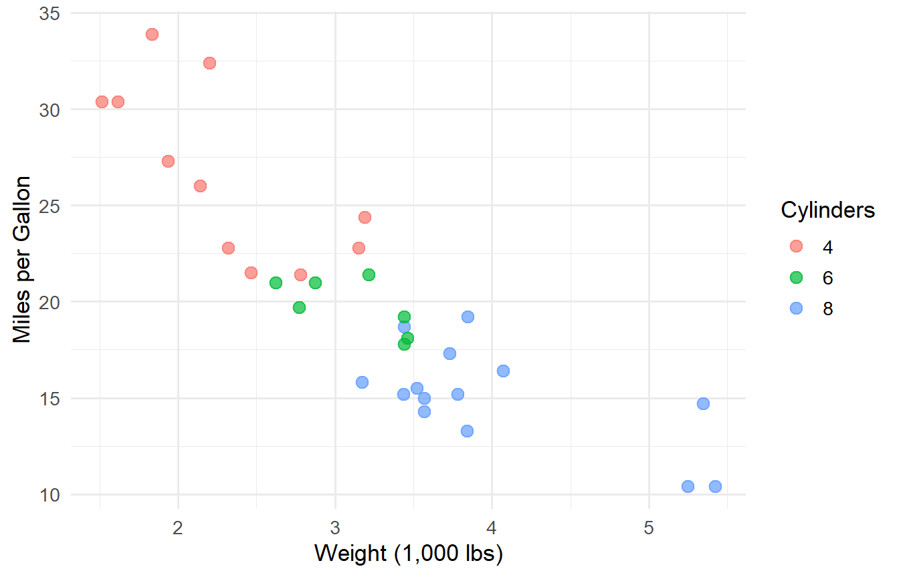
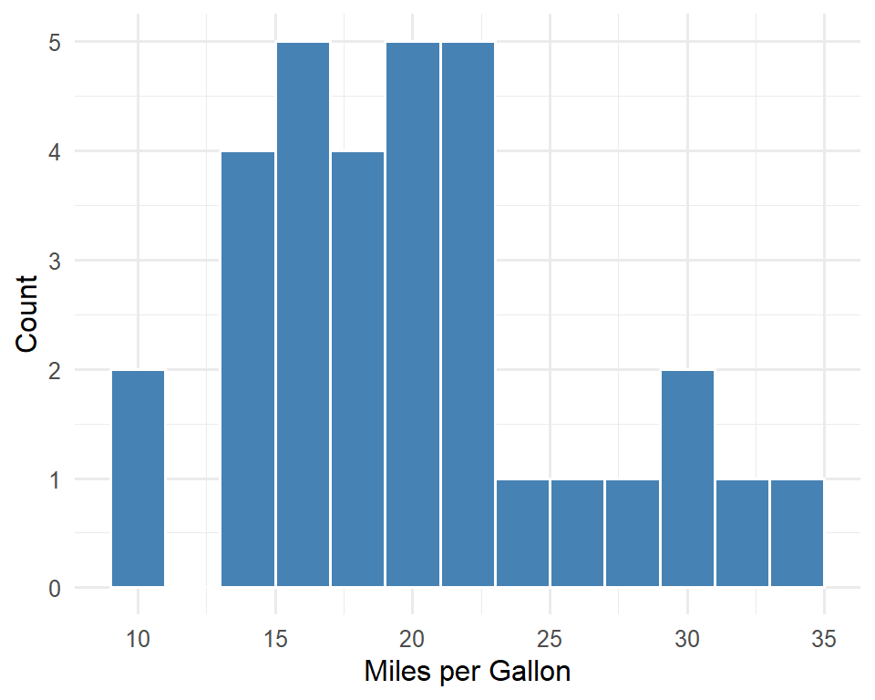
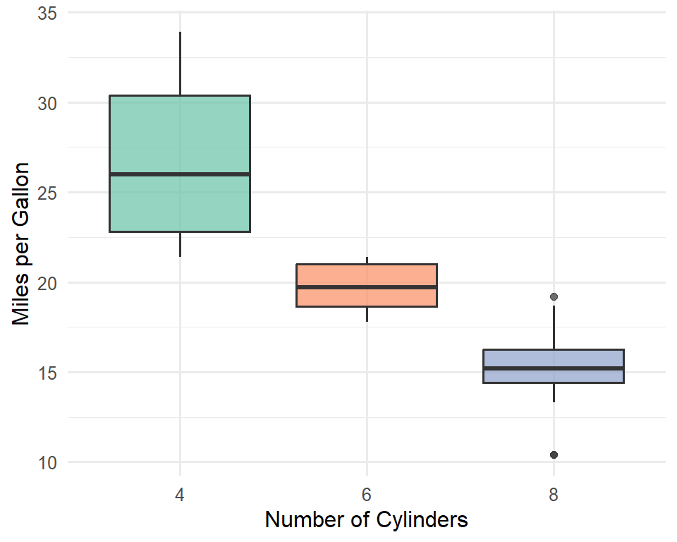

# Create a simple vector and calculate its mean
values <- c(12, 15, 18, 22, 25, 30)
mean(values)[1] 20.33333Quarto is a code-based publishing system that allows you to integrate executable code and plain text into a single document. Think of it as a way to combine your analysis, visualizations, and narrative all in one place.
If you have used R Markdown before, Quarto will feel familiar. It is the next generation of R Markdown, with some syntax differences you may notice when comparing with the R Markdown files used for Day 1 walkthroughs. Key differences include:
#| (hashpipe) syntax instead of being placed inside {r, option=value}Quarto can output documents in many formats, including:
Quarto embraces the concept of literate programming — the idea that code, results, and narrative explanation should live together. This means your data preparation, visualizations, and analysis all exist in one document.
The practical benefit is reproducibility: if your data changes, or if you revise your analysis approach, you can simply re-render the document and everything updates automatically. No more copying and pasting tables or figures into a separate Word document.
To begin, let’s create a new Quarto document in RStudio:
RStudio will generate a template .qmd file with some example content. Click the Render button (or use the keyboard shortcut Ctrl+Shift+K / Cmd+Shift+K) to see the HTML output.
Create a new Quarto document now. Render it to see the default output before we start making changes.
Quarto documents use Markdown syntax for formatting text. Here are the essentials:
Use # symbols to create headings. More # symbols mean smaller headings:
# Heading 1
## Heading 2
### Heading 3
#### Heading 4**This text is bold**
*This text is italic*
***This text is bold and italic***This text is bold, this text is italic, and this text is bold and italic.
Use backticks for inline code: `mean(x)` renders as mean(x).
Use triple backticks for code blocks (without execution):
```
summary(data)
```Unordered lists use -, +, or *:
- First item
- Second item
- Sub-item
- Another sub-item
- Third itemOrdered lists use numbers:
1. First step
2. Second step
3. Third stepYou can add footnotes using the [^1] syntax:
This claim needs a citation[^1].
[^1]: Here is the footnote text.We will cover footnotes in more detail in ?@sec-footnotes.
Create tables using pipes and dashes:
| Column A | Column B | Column C |
|----------|----------|----------|
| Row 1 | Data | Data |
| Row 2 | Data | Data |Which renders as:
| Column A | Column B | Column C |
|---|---|---|
| Row 1 | Data | Data |
| Row 2 | Data | Data |
Markdown is worth learning beyond Quarto. It is the standard formatting syntax used across many platforms: GitHub, Jupyter notebooks, Slack, and many others. It is also the primary way people now communicate with AI tools like ChatGPT and Claude, especially in the context of agentic coding where developers use markdown documents to control agent behavior. Knowing Markdown will make you more effective across many digital workflows.
RStudio offers two editing modes for Quarto documents:
Source Editor shows the raw Markdown syntax. You will see the # symbols, **bold** markers, and all other formatting codes directly. This is useful when you want precise control over formatting, when you are writing code-heavy documents, or when troubleshooting rendering issues.
Visual Editor provides a word-processor-like experience similar to Microsoft Word. Formatting is displayed as it will appear, and you can use toolbar buttons for common formatting. This is useful when writing narrative-heavy sections, working with tables, or when you are new to Markdown.
To switch between them, use the Source and Visual buttons at the top-left of the editor pane.
Switch between Source and Visual modes now. Try typing some Markdown in Source mode, then switch to Visual mode to see how it renders. Notice how the Visual Editor also provides a toolbar for inserting images, tables, and footnotes.
Code chunks are blocks of executable code embedded in your document. They are the core feature that separates Quarto from a plain text document. A code chunk looks like this:
```{r}
# Your R code goes here
summary(mtcars)
```To add a new code chunk, you can:
Ctrl+Alt+I (Windows) or Cmd+Option+I (Mac)Try making a code chunk below:
Good job! For now, you should place all of your R code inside of code chunks.
There are several ways to run code in your document:
Ctrl+Enter / Cmd+EnterCtrl+Shift+Enter / Cmd+Shift+EnterAlt+Ctrl+Shift+P). This is also available from the Run menu.# Create a simple vector and calculate its mean
values <- c(12, 15, 18, 22, 25, 30)
mean(values)[1] 20.33333Notice that the output will show up both in your Console, and below the chunk (i.e., “inline”).
Code chunks execute in the order they appear in the document when you render. If you run chunks out of order during interactive editing (for example, running a chunk that uses an object defined earlier in the document without first running the earlier chunk), you will get an error. When in doubt, use Run All Chunks Above to make sure everything is up to date. If your document will not render, execution order is one of the first things to check.
You can also embed R code directly within your text using the syntax {r} code. This is useful for reporting results within a sentence.
For example, writing:
The dataset contains 32 observations and 11 variables.Produces: The dataset contains 32 observations and 11 variables.
This is powerful for creating dynamic reports — if the data changes, the numbers in your text update automatically.
Inline code follows the same execution order rules as code chunks. Any object you reference in inline code must be created in a code chunk above that point in the document.
The block at the very top of your Quarto document (between the --- lines) is called the YAML header. YAML stands for “Yet Another Markup Language,” and it uses a simple key: value pair structure to define settings.
The YAML header is where you set document properties (title, author, date) as well as rendering options (output format, themes, table of contents, etc.).
Here is an example YAML header for an HTML document:
---
title: "My Analysis Report"
author: "Your Name"
date: 6/3/2026
format:
html:
toc: true
number-sections: true
theme: cosmo
code-fold: true
---You can set one or more output formats in the YAML header. The example above demonstrates some of the options available when rendering the document in HTML.
To add a PDF format option alongside HTML:
format:
html:
toc: true
theme: flatly
pdf:
toc: true
documentclass: articleWhen multiple formats are specified, you can choose which one to render using the dropdown next to the Render button, or from the command line with quarto render document.qmd --to pdf.
Rendering to PDF requires a LaTeX installation. If you do not have one, Quarto can install TinyTeX for you by running quarto install tinytex in your terminal.
Code chunk options are set using the #| (hashpipe) syntax at the top of a chunk. These control how each chunk behaves during rendering. Below are some of the most common.
Labels help with navigation and cross-referencing. Prefix with fig- or tbl- to enable automatic numbering:
```{r}
#| label: fig-example-plot
```echoThe echo option controls whether the source code appears in the rendered document:
[1] 84The result above (84) was produced by code, but the code itself is hidden because echo: false was set.
evalThe eval option controls whether the code runs at all:
# This code is displayed but does NOT execute
this_would_cause_an_error <- nonexistent_function()The chunk above is displayed but was never executed, so no error occurs.
includeThe include option controls whether anything from the chunk (code or results) appears in the rendered document. When include: false, the code still runs, but nothing is shown:
Instead of setting options chunk-by-chunk, you can set defaults for the entire document in the YAML header:
---
title: "My Report"
execute:
echo: true
warning: false
message: false
---This hides warnings and messages throughout the document while still displaying code. Individual chunks can override these defaults.
Let’s create some example tables and figures using the built-in mtcars dataset.
By default, Quarto displays data frames based on the df-print option set in the YAML header. This document uses df-print: kable, which produces clean, formatted tables:
# Create a summary table
mtcars_summary <- aggregate(
cbind(mpg, hp, wt) ~ cyl,
data = mtcars,
FUN = function(x) round(mean(x), 1)
)
names(mtcars_summary) <- c("Cylinders", "Avg MPG", "Avg HP", "Avg Weight (1000 lbs)")
mtcars_summary Cylinders Avg MPG Avg HP Avg Weight (1000 lbs)
1 4 26.7 82.6 2.3
2 6 19.7 122.3 3.1
3 8 15.1 209.2 4.0As shown in Table 1, vehicles with fewer cylinders tend to have higher fuel efficiency.
You can also format tables using dedicated packages for more control:
knitr::kable() — simple, reliable table formattingkableExtra — extends kable with styling optionsflextable — flexible tables that work across output formatsgt — a grammar of tables, great for publication-quality outputYou can control figure appearance using chunk options for dimensions, alignment, captions, and alt text:
ggplot(mtcars, aes(x = wt, y = mpg, color = factor(cyl))) +
geom_point(size = 3, alpha = 0.7) +
labs(
x = "Weight (1,000 lbs)",
y = "Miles per Gallon",
color = "Cylinders"
) +
theme_minimal(base_size = 13)
As shown in Figure 1, there is a clear negative relationship between vehicle weight and fuel efficiency. Note how Quarto automatically numbers the figure based on its order in the document.
When a code chunk produces multiple figures, you can control the layout:
# Panel (a): Histogram
ggplot(mtcars, aes(x = mpg)) +
geom_histogram(binwidth = 2, fill = "steelblue", color = "white") +
labs(x = "Miles per Gallon", y = "Count") +
theme_minimal(base_size = 12)
# Panel (b): Boxplot
ggplot(mtcars, aes(x = factor(cyl), y = mpg, fill = factor(cyl))) +
geom_boxplot(alpha = 0.7, show.legend = FALSE) +
labs(x = "Number of Cylinders", y = "Miles per Gallon") +
scale_fill_brewer(palette = "Set2") +
theme_minimal(base_size = 12)

Figure 2 shows two views of the MPG distribution: Figure 2 (a) presents the overall distribution, while Figure 2 (b) breaks it down by cylinder count.
For both figures and tables, you can create in-text references using @label. Quarto will automatically generate the correct numbering:
@fig-mpg-scatter renders as a clickable link like “Figure 1”@tbl-mtcars-summary renders as “Table 1”The labels must begin with the fig- or tbl- prefix, and the chunk must include a fig-cap or tbl-cap for cross-referencing to work.
There are several ways to add footnotes in Quarto.
Numbered footnotes use a reference marker in the text and define the content elsewhere:
This is a statement that needs a footnote[^1].
[^1]: This is the footnote content.This is a statement that needs a footnote1.
Named footnotes use a descriptive label instead of a number, which can be easier to manage in longer documents:
Quarto supports many output formats[^formats].
[^formats]: Including HTML, PDF, Word, revealjs slides, and more.Quarto supports many output formats2.
Inline footnotes let you write the content directly in the text without a separate definition:
This is convenient for short notes^[Like this one, which does not require a separate definition.].This is convenient for short notes3.
For documents with long-running computations, you can cache results so that chunks only re-execute when their code changes.
Add caching to a single chunk:
```{r}
#| cache: true
# This long computation will only run once
result <- some_slow_function(data)
```Or enable caching for the entire document in the YAML header:
execute:
cache: trueWhen caching is enabled, Quarto creates a folder named document-name_cache containing the stored results. If the code in a cached chunk changes, that chunk (and any chunks that depend on it) will re-execute.
Caching can sometimes cause unexpected behavior if chunks depend on external data that has changed or on objects modified in other chunks. If you encounter strange results, try deleting the cache folder and re-rendering.
Callout blocks are a great way to draw attention to important information. Quarto supports five types:
Use for additional context or supplementary information.
Use to flag potential problems or common mistakes.
Use for critical information the reader must not miss.
Use for helpful suggestions and best practices.
Use to warn about actions that could cause issues.
The syntax for creating a callout is:
::: {.callout-note}
## Optional Title
Content of the callout goes here.
:::You can also add attributes. For example, a collapsible callout:
::: {.callout-tip collapse="true"}
## Click to Expand
This content is hidden by default.
:::This content is hidden by default. It appears when the reader clicks the callout header.
You can also change the appearance to a simpler style:
::: {.callout-note appearance="simple"}
A simpler, more understated callout style.
:::Quarto has built-in support for citations and bibliographies, making it an excellent tool for academic and research writing.
Step 1: Create or export a bibliography file (e.g., references.bib) from a reference manager like Zotero, Mendeley, or EndNote. A .bib file entry looks like this:
@article{wickham2014,
title={Tidy Data},
author={Wickham, Hadley},
journal={Journal of Statistical Software},
volume={59},
number={10},
year={2014}
}Step 2: Reference the bibliography file in your YAML header, and optionally specify a citation style:
---
title: "My Research Paper"
bibliography: references.bib
csl: apa.csl
---Citation style files (.csl) for virtually any journal or style guide (APA, Chicago, MLA, etc.) can be downloaded from the Zotero Style Repository.
Step 3: Cite sources in your text using the [@key] syntax:
Tidy data principles have transformed data analysis workflows [@wickham2014].Quarto will automatically generate a formatted References section at the end of your document.
Quarto can do much more than single-page reports. The same core skills you have learned today apply to a wide range of output types:
format: revealjs for HTML presentations or format: beamer for PDF slidesformat: dashboard with layouts and value boxesThese all use the same Markdown syntax, code chunks, and YAML configuration you have practiced today.
Visit the Quarto documentation for guides and examples of all these formats.